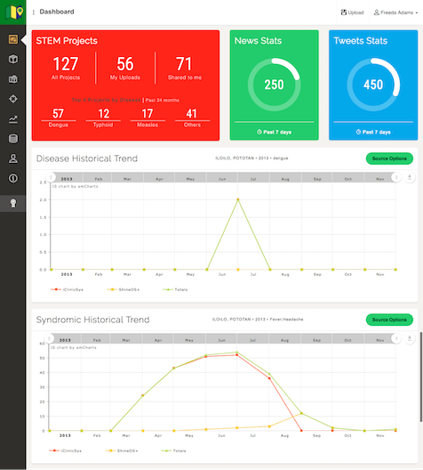

Syndromic Surveillance Visualization
For its second year, the project aims to integrate third-party sources into the disease models themselves. Through the use of Application Programming Interfaces (APIs), the Web Application becomes a hub for disease modelers to include live deidentified data from significant surveillance systems. Since APIs are used, no data is stored in FASSSTER's server.
Integrated data sources are:
- SHINE OS+
- Infodemiological (Health-Related) Tweets
- PIDSR Data
FASSSTER aims to create a hub for different data sources (Disease records, environmental parameters, etc.), providing a rich layout of integrated information that will facilitate in understanding the spread of diseases.